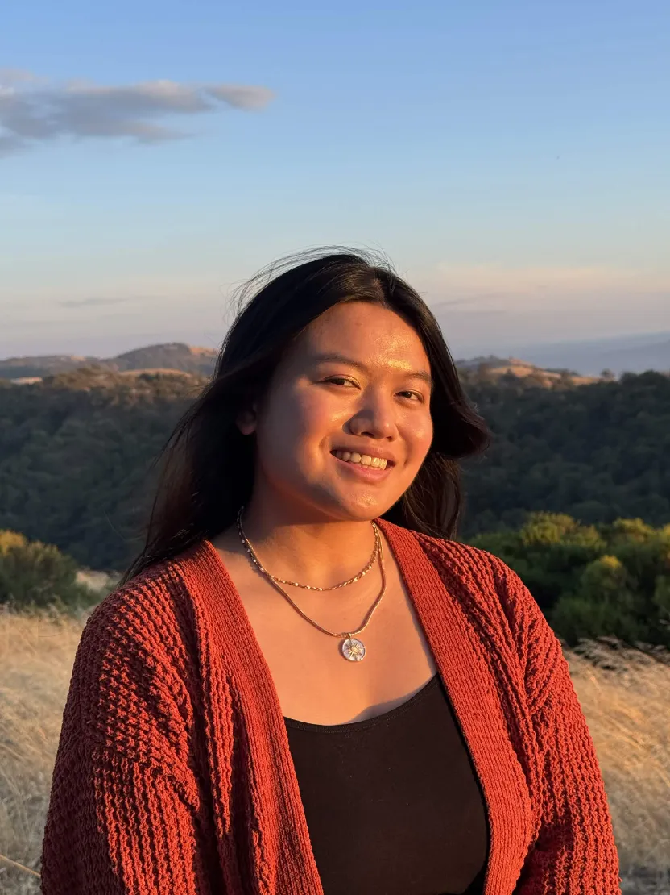

Jennifer Low is a digital illustrator, graphic designer, and multimedia artist based in San Jose, California. Following her childhood in the Central Valley, she is currently pursuing a Digital Media Arts BFA at San Jose State University. Whilst working towards her degree, Jennifer also acts as CADRE Student Organization’s graphic design lead, after her subsequent committee involvement as their social media manager. Jennifer draws inspiration from the past, utilizing nostalgic relics as a springboard for something new. Her work blends the whimsical illustration style of J.C Leyendecker, the technicolor pigments of mid twentieth century poster design, and the modern terror of liminal spaces, Jennifer aims to depict vibrantly haunting expressions of human emotion, while paying homage to what she loves. Known for her involvement with group exhibitions such as Scratch Disk 2026, Jennifer is currently experimenting with a variety of digitized interactive artwork.